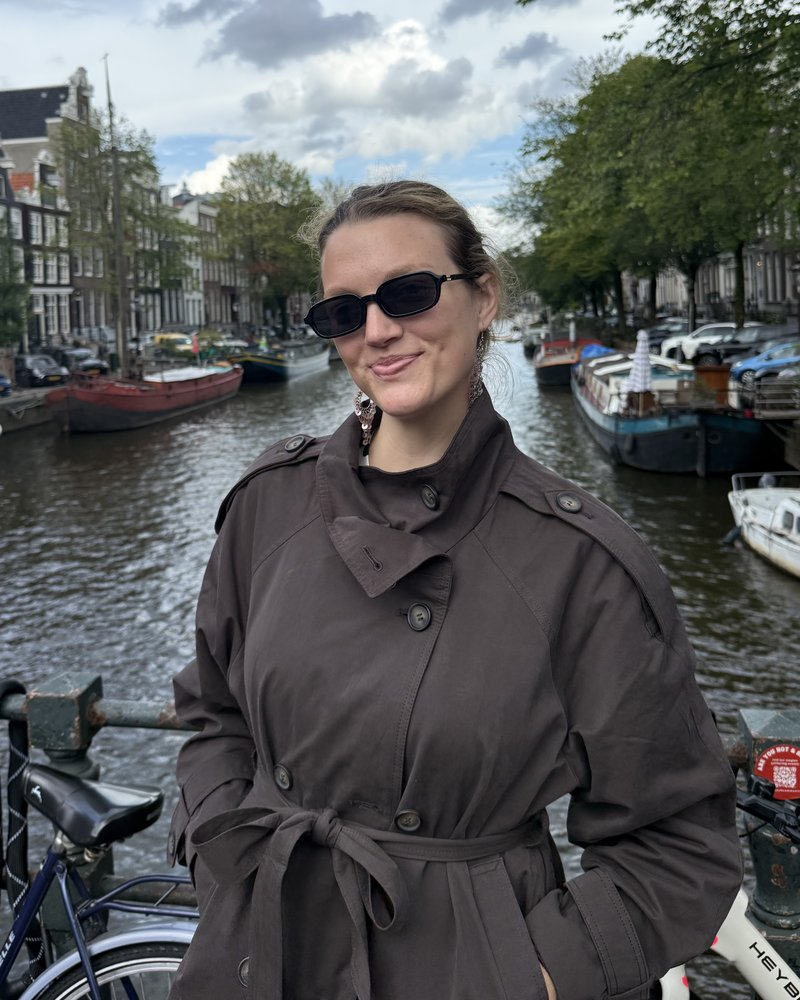

All-in-one creative services by Sophie Berry, working from Tulsa but available worldwide.
I bring the business, technical and creative sides to every project. I studied international business, information systems and Chinese, then built my career in creative marketing and production in New York.
Specializing in Marketing Strategy, Project Management, Website Design, Content Creation, Social Management and Podcast Production.